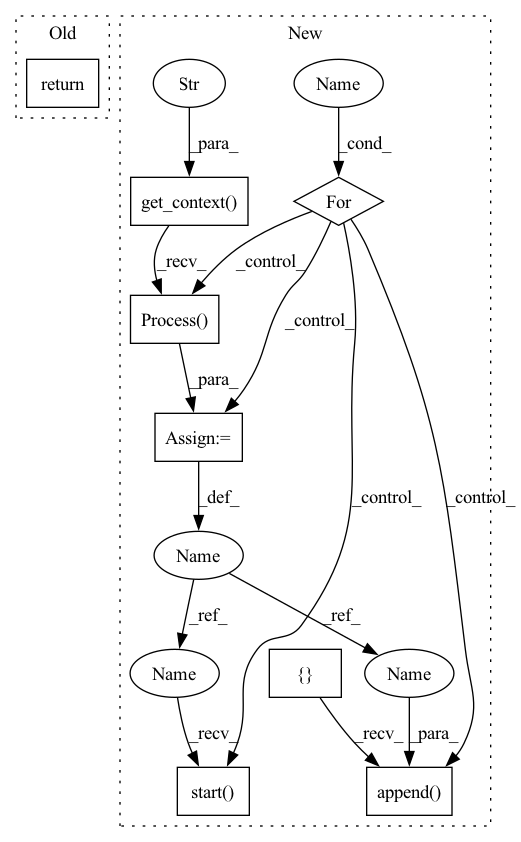

Pattern ID :27952
Before Change
self.doc_model = SentenceTransformer(model_path[1])
def start_multi_process_pool(self, target_devices: List[str] = None) -> Dict[str, object]:
return self.doc_model.start_multi_process_pool(target_devices=target_devices)
def stop_multi_process_pool(self, pool: Dict[str, object]):
output_queue = pool["output"]After Change
def start_multi_process_pool(self, target_devices: List[str] = None) -> Dict[str, object]:
logger.info("Start multi-process pool on devices: {}".format(", ".join(map(str, target_devices))))
ctx = mp.get_context("spawn" )
input_queue = ctx.Queue()
output_queue = ctx.Queue()
processes = []
for process_id, device_name in enumerate(target_devices):
p = ctx.Process(target=SentenceTransformer._encode_multi_process_worker, args=(process_id, device_name, self.doc_model, input_queue, output_queue), daemon=True)
p.start()
processes.append(p )
return {"input": input_queue, "output": output_queue, "processes": processes}
def stop_multi_process_pool(self, pool: Dict[str, object]):In pattern: SUPERPATTERN
Frequency: 4
Non-data size: 8
Instances Fragment ID: 82883618
Project Name: ukplab/beir
Commit Name: d858a38384efabf6ef5992cfe454745d884c1055
Time: 2022-06-15
Author: nouamane98@gmail.com
File Name: beir/retrieval/models/sentence_bert.py
M Class Name: SentenceBERT
N Class Name: SentenceBERT
M Method Name: start_multi_process_pool(2)
N Method Name: start_multi_process_pool(2)
M Parent Class:
N Parent Class:
M File Name: beir/retrieval/models/sentence_bert.py
N File Name: beir/retrieval/models/sentence_bert.py
M Start Line: 25
M End Line: 25
N Start Line: 26
N End Line: 38
Before Change
def test_algorithm(self):
if not torch.cuda.is_available():
print("skip tests since cuda is not available")
return
nprocs = torch.cuda.device_count()
os.environ["WORLD_SIZE"] = str(nprocs)
os.environ["LOCAL_WORLD_SIZE"] = str(nprocs)After Change
"BAGUA_SERVICE_PORT": str(find_free_port(9000, 9100)),
}
mp = multiprocessing.get_context("spawn" )
processes = []
for i in range(nprocs):
p = mp.Process(target=run_model, args=(i, env))
p.start()
processes.append( p)
for p in processes:
p.join(timeout=60)
Fragment ID: 82883619
Project Name: baguasys/bagua
Commit Name: a9529bef66e367884316a2b2ebc917ff35bf6334
Time: 2021-08-26
Author: 45031995+wangraying@users.noreply.github.com
File Name: tests/torch_api/test_async_model_average.py
M Class Name: TestAsyncModelAverage
N Class Name: TestAsyncModelAverage
M Method Name: test_algorithm(1)
N Method Name: test_algorithm(1)
M Parent Class: unittest.TestCase
N Parent Class: unittest.TestCase
M File Name: tests/torch_api/test_async_model_average.py
N File Name: tests/torch_api/test_async_model_average.py
M Start Line: 62
M End Line: 76
N Start Line: 68
N End Line: 87
Before Change
self.doc_model = SentenceTransformer(model_path[1])
def start_multi_process_pool(self, target_devices: List[str] = None) -> Dict[str, object]:
return self.doc_model.start_multi_process_pool(target_devices=target_devices)
def stop_multi_process_pool(self, pool: Dict[str, object]):
output_queue = pool["output"]After Change
def start_multi_process_pool(self, target_devices: List[str] = None) -> Dict[str, object]:
logger.info("Start multi-process pool on devices: {}".format(", ".join(map(str, target_devices))))
ctx = mp.get_context("spawn" )
input_queue = ctx.Queue()
output_queue = ctx.Queue()
processes = []
for process_id, device_name in enumerate(target_devices):
p = ctx.Process(target=SentenceTransformer._encode_multi_process_worker, args=(process_id, device_name, self.doc_model, input_queue, output_queue), daemon=True)
p.start()
processes.append( p)
return {"input": input_queue, "output": output_queue, "processes": processes}
def stop_multi_process_pool(self, pool: Dict[str, object]): Fragment ID: 82883620
Project Name: beir-cellar/beir
Commit Name: d858a38384efabf6ef5992cfe454745d884c1055
Time: 2022-06-15
Author: nouamane98@gmail.com
File Name: beir/retrieval/models/sentence_bert.py
M Class Name: SentenceBERT
N Class Name: SentenceBERT
M Method Name: start_multi_process_pool(2)
N Method Name: start_multi_process_pool(2)
M Parent Class:
N Parent Class:
M File Name: beir/retrieval/models/sentence_bert.py
N File Name: beir/retrieval/models/sentence_bert.py
M Start Line: 25
M End Line: 25
N Start Line: 26
N End Line: 38
Before Change
def run_test_locally(fn):
if not torch.cuda.is_available():
print("skip tests since cuda is not available")
return []
nprocs = torch.cuda.device_count()
os.environ["WORLD_SIZE"] = str(nprocs)After Change
"BAGUA_SERVICE_PORT": str(find_free_port(9000, 9100)),
}
mp = multiprocessing.get_context("spawn" )
results = [Result() for _ in range(nprocs)]
processes = []
for i in range(nprocs):
p = mp.Process(
target=fn,
args=(i, nprocs, results, env),
)
p.start()
processes.append( p)
for p in processes:
p.join(timeout=60)
Fragment ID: 82883621
Project Name: baguasys/bagua
Commit Name: a9529bef66e367884316a2b2ebc917ff35bf6334
Time: 2021-08-26
Author: 45031995+wangraying@users.noreply.github.com
File Name: tests/comm/test_communicator.py
M Class Name: AnonimousClass
N Class Name: AnonimousClass
M Method Name: run_test_locally(1)
N Method Name: run_test_locally(1)
M Parent Class:
N Parent Class:
M File Name: tests/comm/test_communicator.py
N File Name: tests/comm/test_communicator.py
M Start Line: 106
M End Line: 122
N Start Line: 115
N End Line: 138